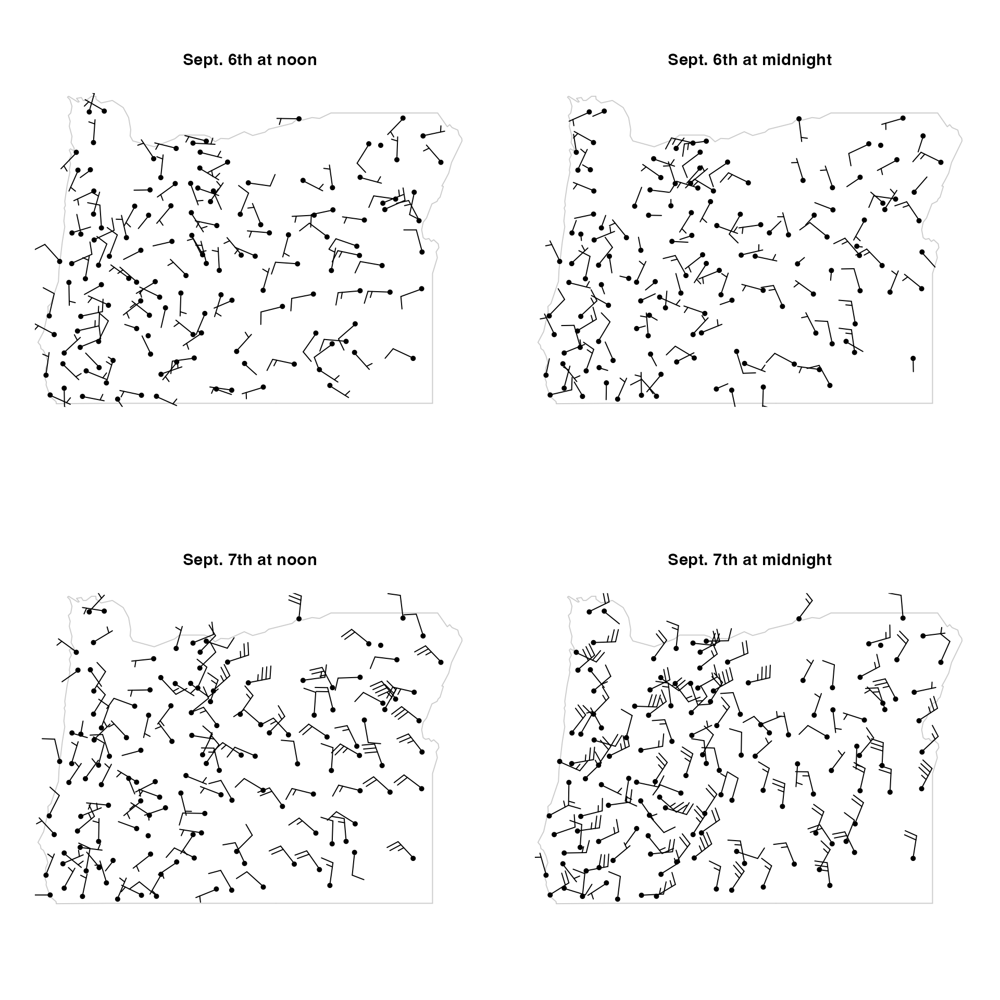
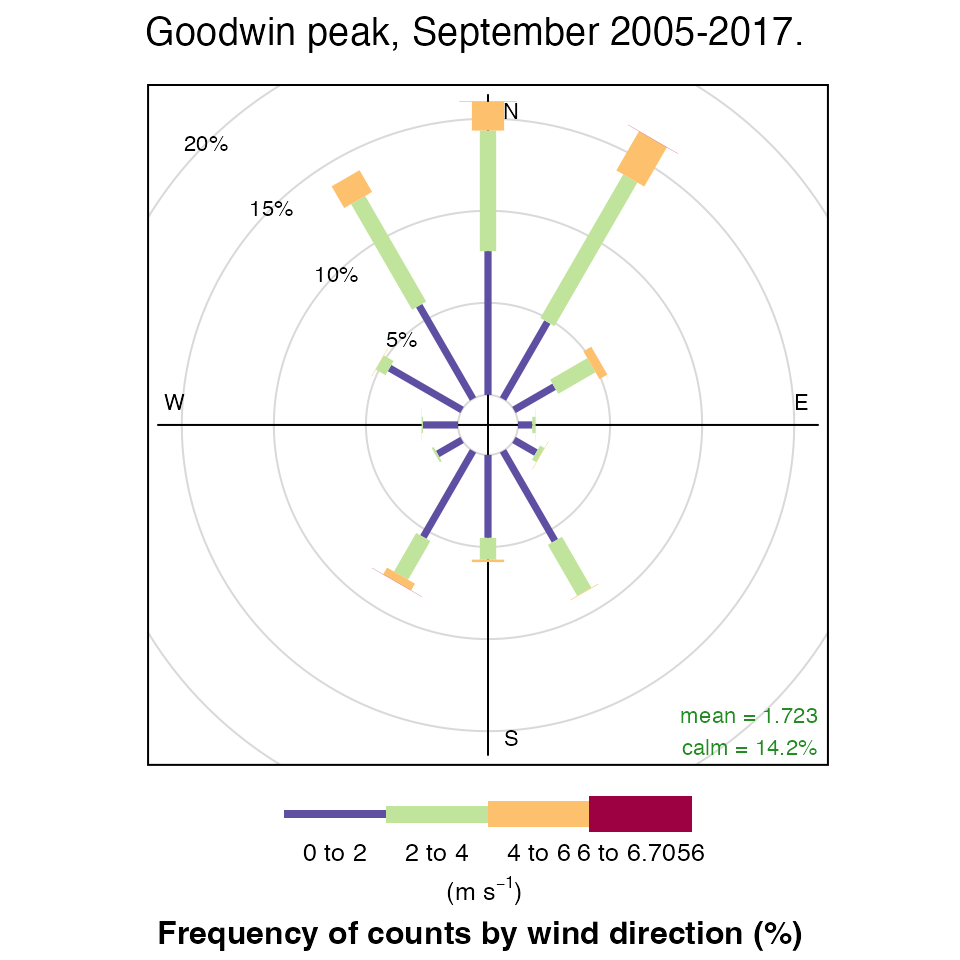
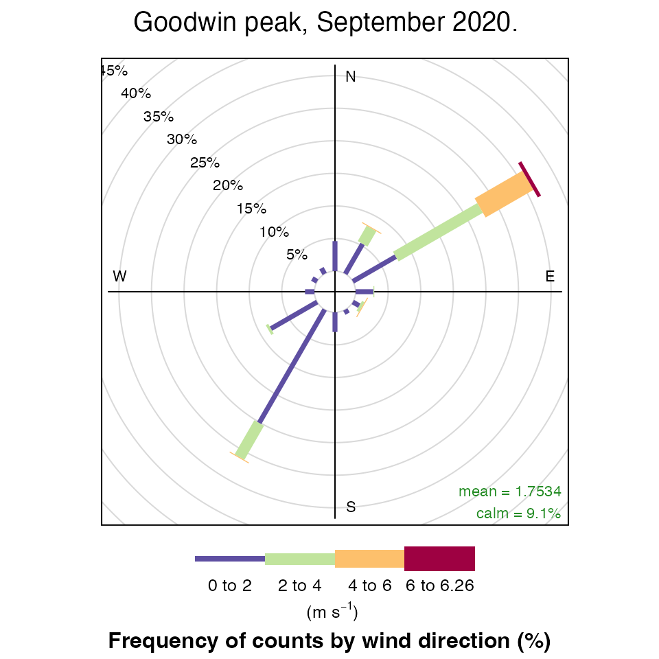

September 2020 Oregon Wildfires
Eli Grosman, Mazama Science
September 18, 2020
Source:vignettes/articles/Oregon_2020_LaborDay.Rmd
Oregon_2020_LaborDay.RmdBackground
At the end of a hot and dry summer, the conditions were set for several large wildfires to spread across western Oregon. The purpose of this document is to demonstrate the RAWSmet package’s data gathering and modeling capabilities by investigating the factors that allowed for the wildfires to spread.
Assembling data
First, we will use RAWSmet’s wrcc_loadMeta() and wrcc_loadMultiple() functions to gather recent data from all of the stations in Oregon. The following code is executed to gather the necessary data between August 31st and September 14th, approximately a week before and after the start of the wildfires in Holiday Farm.
library(RAWSmet) setRawsDataDir("~/Data/RAWS") # Load WRCC station metadata for Oregon oregonMeta <- wrcc_loadMeta(stateCode = "OR") filePath <- file.path(getRawsDataDir(), "stationList_OR.rda") # Load pre-generated data if it exists. If it does not exist, create it. if ( file.exists(filePath) ) { stationList_OR <- get(load(filePath)) } else { # Create required data stationList_OR <- wrcc_loadMultiple(wrccIDs = oregonMeta$wrccID, meta = oregonMeta, year = 2020, password = MY_PASSWORD) %>% rawsList_filterDate( startdate = MazamaCoreUtils::parseDatetime(20200831, timezone = "America/Los_Angeles"), enddate = MazamaCoreUtils::parseDatetime(20200914, timezone = "America/Los_Angeles")) # Save this data so it does not need to be generated again in the future save(stationList_OR, file = filePath) }
Locations with data
Across the state of Oregon there are 205 RAWS stations with data provided by the WRCC, however, only 134 of these stations have accessible data from the dates of the fires. The locations of these stations in addition to station metdata can be seen on the following map:
wrccIDs <- names(stationList_OR) meta <- oregonMeta %>% dplyr::filter(wrccID %in% wrccIDs) RAWSmet::raws_leaflet(meta)
Wind shift maps
With all of the necessary data assembled, we can now take a look at the wind patterns around the dates of the wildfires. These maps, created with maps::map() and RAWSMet::rawsList_addWindBarbs(), show the direction and speeds of wind gusts at all of the available stations in Oregon.
Through these maps it is apparent that on September 6th at noon there is no irregular pattern in the wind that stands out. However, at midnight on the 6th, the eastern side of Oregon experienced strong winds coming from the north. Over the night and throughout the morning, these winds move and the western side of the Cascades is seen to have strong winds coming from the east. 
Wind shift time series plots
Lets take a closer look at some stations west of the cascades. With RAWSmet’s windTimeseriesPlot() and timeseriesMultiplot(), we can see the change in the wind pattern and the change in temperature and humidity over this time period. It is apparent that over labor day weekend, the direction of the wind suddenly changed to point east and gust speeds increased considerably. Furthermore, these stations experienced an extreme drop in humidity and temperature increased overall. 
Wind rose plots
Using openair’s windRose() plot, we can take a closer look at the wind patterns in western Oregon. The following plots compare the winds at Goodwin Peak in September 2020 to historical data for the winds in each September between 2005 and 2017. From the historical data it is clear that the winds in Goodwin Peak in September typically come from the north. However, in September 2020, an unmistakable majority of the winds come from the east.
